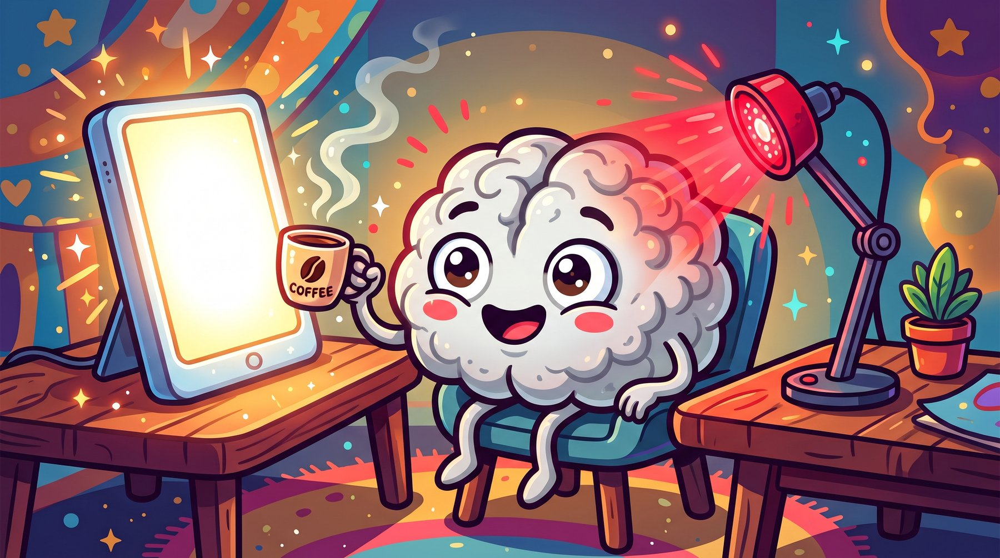
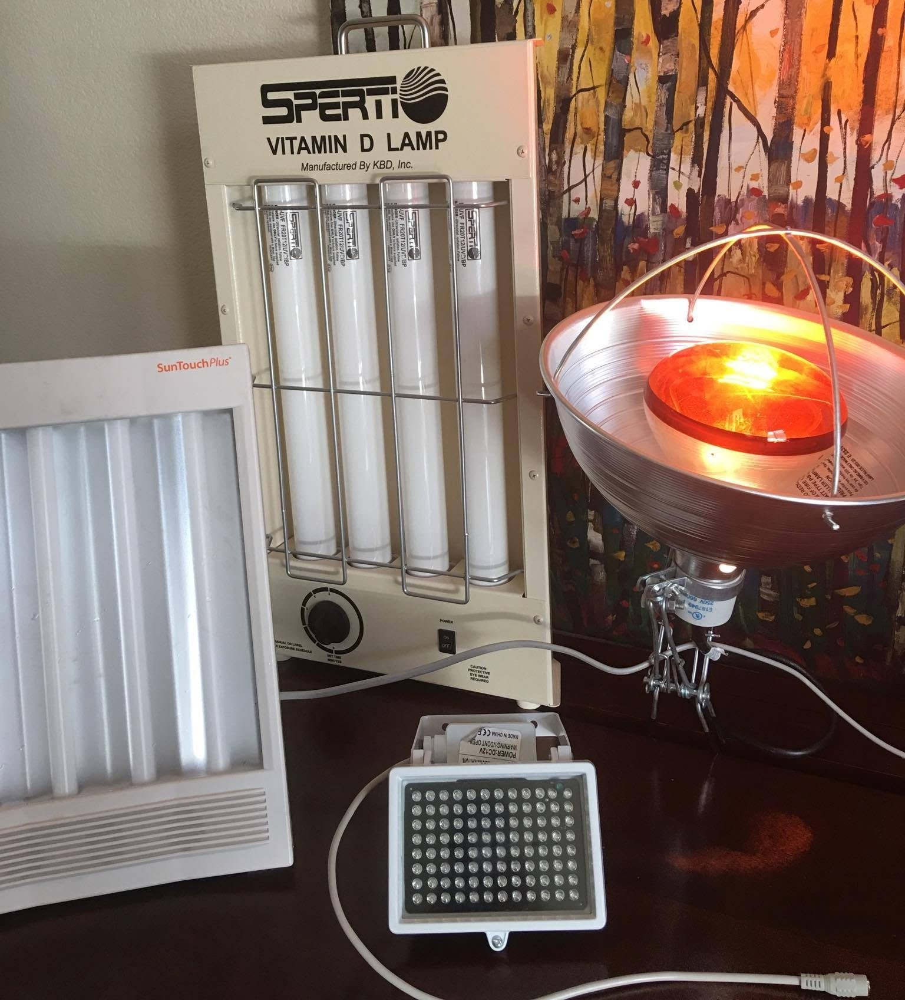

Beyin taktiklerinin çoğu kanıtla ilk karşılaşmada çöker. Üçü ise hem yıllar süren kendi kullanımımdan hem de epey okumadan sağ çıktı. Hepsi ucuz, makul kullanıldığında muhtemelen güvenli ve arkalarında gerçek çalışmalar var:
- Kahve, günde birkaç kez. Olmazsa olmaz.
- Sabahları parlak ışık: Yaklaşık 30 dakika boyunca 10.000 lüks. Harika.
- Alna yakın kızılötesi ışık: İki günde bir, bir dakika. Bende büyü etkisi yaptı.
Bir şey satın almadan önce her birini uzun uzun araştırdım. Aşağıda çalışmaların ne dediğini, her birini nasıl kullandığımı ve risklerin nerede yattığını anlatıyorum. Doktorunuz değilim: Kalp, göz ya da ruh hali sorununuz varsa bunlardan herhangi birini denemeden önce bir doktora danışın.

1. Kahve: Olmazsa olmaz
Elimizdeki en iyi incelenmiş bilişsel güçlendirici kafein ve işe yarıyor. Uyanık kaldıkça biriken ve uyku getiren molekül olan adenozini bloke ediyor. Askerî ve mesleki araştırmaları ele alan 2016 tarihli bir derleme, kabaca 40 ila 300 mg'lık dozların uyanıklığı, tetikte olmayı, dikkati ve tepki süresini güvenilir biçimde iyileştirdiğini buldu. Belleğe ve üst düzey akıl yürütmeye etkisi daha az tutarlı; en büyük katkıyı da uykusuz kaldığınızda yapıyor.
Günde birkaç fincan yaklaşık 200 mg eder. Bu da sağlıklı yetişkinlerin çoğu için FDA'in belirlediği günlük 400 mg seviyesinin rahatça altında kalıyor.
Doza dikkat. Eskiden kafeinin ritim bozukluğuna ve ölüme yol açtığını söyleyip insanları uyarırdım. Meğer ilki büyük ölçüde efsaneymiş; ikincisi ise gerçek. UK Biobank'taki 386.000 katılımcının verilerinde günlük her ek fincan, aritmi riskinde %3'lük bir düşüşle ilişkiliydi. NEJM'de yayımlanan randomize bir çalışmaya göre kahve, kalbin üst odacıklarında (kulakçıklarda) ekstra atımları artırmıyor, ama karıncıklardan kaynaklanan ekstra atımları aşağı yukarı bir buçuk katına çıkarıyor. Çarpıntıya yatkınsanız bunu hesaba katmalısınız.
Ölümler konsantre kafeinden kaynaklanıyor. Bir çay kaşığı saf kafein tozunda 28 fincan kahve kadar kafein var ve FDA'in uyarısına göre kısa sürede alınan 1.200 mg civarında bir doz nöbetleri başlatabiliyor. Yani kahvenizi için, tadını çıkarın; ama tozlardan, haplardan ve üst üste içilen enerji içeceklerinden uzak durun. Lütfen kendinizi öldürmeyin.
Saate dikkat. Bir uyku çalışmasında yatmadan altı saat önce alınan 400 mg kafein uykuyu bir saatten fazla kısalttı; katılımcılar bunu fark etmedi bile. Kaçan uyku, kahvenin kazandırdığı her şeyi geri alır. O yüzden kahveyi sabaha ve öğleden sonranın ilk saatlerine saklayın.

Işık rafım: 10.000 lükslük SunTouch Plus kutusu (solda), 40 dolarlık yakın kızılötesi aydınlatıcı (önde) ve geniş bantlı kızılötesi ısı lambası (sağda). D vitamini lambamı ise D vitamini takviyesine başlayınca ve UVA/B'nin cildi yaşlandırabileceğini düşününce başkasına verdim.
2. Sabahları parlak ışık: Harika
10.000 lükslük bir ışık kutusu bence en hafife alınan beyin taktiği. Sabahları karşısında yaklaşık 30 dakika oturun; sert bir kahve kadar enerji verir, üstelik o titreme hissi olmadan. Üç dört yıl boyunca her gün kullandım; üstelik güneşli Kaliforniya'da yaşıyorum.
Mekanizması iyi biliniyor. Retinadaki ışığa duyarlı hücreler doğrudan hipotalamustaki ana saate, yani suprakiazmatik çekirdeğe bilgi taşır. Parlak sabah ışığı bu saate günün başladığını haber verir: Melatonin salgısı kesilir, o gecenin uykusu takvime yazılır ve uyanıklık artar. 59 çalışmayı inceleyen sistematik bir derleme, beyaz ışık parlaklaştıkça uyanıklığın güvenilir biçimde arttığını buldu; karmaşık görevlerdeki etkiler ise karışıktı.
En büyük faydayı jet lag'de gördüm. Kendi haline bırakılan biyolojik saat yavaş yavaş yetişir; doğuya yapılan bir yolculuktan sonra uyum sağlamak bir hafta, hatta daha uzun sürebilir. Doğru zamanlanmış parlak ışık bu saati günde 1,5 ila 2 saate kadar kaydırabiliyor. İnişin ardından yaptığım sabah seansları, yeni saat dilimine neredeyse anında alışmamı sağladı.
Ruh haline dair kanıtlar daha da güçlü:
- Depresyon. American Journal of Psychiatry'de yayımlanan bir meta-analiz, ışık terapisinin etki büyüklüklerinin antidepresan ilaçlarınkiyle kıyaslanabilir olduğunu buldu; bu, mevsimsel depresyon için de mevsimsel olmayan depresyon için de geçerliydi. JAMA Psychiatry'de yayımlanan randomize bir çalışmada sabahları 30 dakikalık 10.000 lüks ışık, mevsimsel olmayan depresyonu olan hastaların %44'ünü remisyona soktu; plasebo grubunda bu oran %30'du.
- DEHB. DEHB'li 29 yetişkinle yapılan açık etiketli bir çalışmada üç haftalık sabah ışığı, hem hastaların kendi bildirdiği hem de nesnel olarak ölçülen belirtileri azalttı. İyileşmeyi en iyi öngören etken ruh halindeki yükselme değil, biyolojik saatin daha erkene kaymasıydı. DEHB'li pek çok kişi gece kuşudur ve sabah ışığı onları yeniden erkene çeker.
Ben şöyle kullandım:
- Yalnızca sabahları. Uyandıktan kısa süre sonra kullanın. Akşam ışığı biyolojik saatinizi geç saatlere kaydırır ve uykunuzu mahveder.
- Zahmetsiz olsun. Benimki banyodaydı; hazırlanırken ve tıraş olurken açık dururdu. Kahvaltı ya da e-posta sırasında da olur.
- Doğrudan bakmayın. Siz başka bir şeye bakarken ışık gözlerinize yandan gelsin ve kutunun öngördüğü mesafede oturun. Uzaklaştıkça parlaklık hızla düşer.
- Kısa başlayın. Baş ağrısından ve göz yorgunluğundan kaçınmak için 10 ila 15 dakikayla başlayıp yavaş yavaş 30 dakikaya çıkın.
Benimki bir SunTouch Plus; saygın bir üreticinin UV filtreli herhangi bir 10.000 lükslük kutusu da iş görür.
Kimler dikkatli olmalı? Sabah ışığı bipolar bozukluğu olan kişileri hipomaniye itebilir; bir pilot çalışmada sabah ışığı alan dört bipolar hastadan üçünde tam olarak bu oldu. Siz de bu durumdaysanız bunu yalnızca psikiyatristinizle birlikte yapın; o, öğle saatlerindeki ışığı tercih edebilir. Retina hastalığınız varsa ya da ışığa duyarlılık yaratan ilaçlar kullanıyorsanız önce göz doktorunuza danışın.
3. Alna yakın kızılötesi ışık: Büyülü
Üçü arasında en az kanıtlanmış—ve en riskli—olanı bu; benim için ise en güçlüsü. Yaklaşık bir buçuk yıl boyunca iki günde bir, 850 nm dalga boyunda ışık veren 96 LED'li bir kızılötesi lambayı bir dakika boyunca alnıma dayadım. Beni kalıcı olarak daha zeki yaptığına inanıyorum. Cihaz yaklaşık 40 dolardı (garaj lambası diye Amazon'dan almıştım).
Biraz bağlam vereyim. Lambayı kullanmaya başladığımda yeni bir işe girmiştim ve yıllarca süren yoğun keto, oruç ve kalori kısıtlamasının ardından beynimin durma noktasına geldiğini hissediyordum. Etkisi büyük oldu; birkaç hafta içinde lamba vazgeçilmezim olmuştu. Sonunda artık ihtiyaç duymadığım için bıraktım. Bu tek bir kişinin deneyimi, klinik çalışma değil; ona göre tartın.
Işık beyne nasıl ulaşabiliyor? Yakın kızılötesi ışık deriden ve kafatasından görünür ışığa göre çok daha kolay geçer. Nöronların içinde onu, mitokondrinin kilit enzimlerinden sitokrom c oksidaz soğurur. Tıpkı spor gibi ışık da küçük bir strestir ve beyin buna onarım ve büyümeyle karşılık verir: Kan akışı artar, inflamasyon azalır, BDNF yükselir. O dönem Harvard'da çalışan Michael Hamblin'in belgelediği gibi bu tepki hormetiktir. Işık beyin için bir egzersizdir, dolayısıyla doz en düşük düzeyde tutulmalıdır. Alanda bunun adı transkraniyal fotobiyomodülasyon. Ben ilk kez Hamblin'in SelfHacked'ten Joe Cohen'e verdiği röportajda duymuştum.
Çalışmalar ne gösteriyor?
- Sağlıklı yetişkinler. Teksas Üniversitesi'nden gelen ilk plasebo kontrollü çalışmada alna uygulanan 1.064 nm'lik lazer, sağlıklı gönüllülerde tepki süresini, çalışma belleğini ve ruh halini iyileştirdi; ruh halindeki iyileşme iki hafta sürdü. Sonraki çalışmalar yürütücü işlevlerde de iyileşme buldu ve bu kazanımları prefrontal korteksteki oksijenlenmenin artmasına bağladı.
- Demans. 60 hastayla yapılan randomize, çift kör bir çalışmada hastalar evde kullanılan bir kaskı sekiz hafta boyunca günde iki kez, altışar dakika taktı. Standart demans taramasındaki (MMSE) puanları yaklaşık 4,8 puan yükseldi; bakım verenler de hastaların ruh halinin ve uykusunun düzeldiğini bildirdi. Kaskı, makalenin yazarlarından birinin şirketi üretiyor. Durham Üniversitesi'nden Paul Chazot bu sonuçları burada tartışıyor.
- Büyük resim. GeroScience'ta yayımlanan 2024 tarihli sistematik bir derleme 37 çalışmayı inceledi: Sağlıklı yaşlılarda çalışma belleği ve ketleme, Alzheimer ve hafif bilişsel bozuklukta ise genel biliş iyileşmişti. 11 randomize çalışmayı kapsayan 2023 tarihli bir meta-analiz, bilişsel bozukluğu olan yaşlılarda genel biliş üzerinde orta düzeyde bir etki buldu. Farelerde yakın kızılötesi ışık, beynin zehirli atıkları lenfatik drenaj yoluyla dışarı atmasına bile yardım etti ve labirent performansını eski düzeyine getirdi.
Dürüst bir özet yapmak gerekirse: Çalışmaların çoğu küçük, dozlar birbirinden çok farklı ve neredeyse hiçbiri benimki gibi ucuz 850 nm güvenlik lambalarını test etmiyor. Umut verici, ama kanıtlanmış değil.
Ben nasıl yaptım?
- Cihaz. Güvenlik kameraları için satılan, 850 nm'lik, 96 LED'li bir kızılötesi aydınlatıcı ve 12 voltluk bir güç adaptörü. Tıbbi cihaz değil. Bu lambalarda yalnızca karanlıkta yanmalarını sağlayan bir ışık sensörü bulunur; üstünü bantla kapatın.
- Doz. Lambayı alnınıza dayayın ve başınızın ön kısmında yavaşça gezdirin: iki günde bir, bir dakika. SelfHacked iki ila dört dakika öneriyordu; bana bir dakika yetti. En güçlü etki temasla elde edilir; uzaktan tutarsanız daha uzun süre gerekir. Fazlası daha iyi değil: Hamblin'in belirttiği gibi tepki iki fazlıdır, yani fazla ışık faydayı silip süpürebilir.
- Gözler. Gözlerinizi kapalı tutun, lambayı da onlardan uzağa doğrultun. 850 nm'de ışık soluk kırmızı bir parıltı gibi görünür, bu yüzden göz kırpma refleksiniz sizi korumaz. Üstelik yeterli miktarda yakın kızılötesi ışık korneaya ve retinaya zarar verebilir.
- Isı. Isınırsa bırakın. Bir ara saunalarda kullanılan türden geniş bantlı bir kızılötesi ısı lambasını da başımda denedim; rahatsız ediciydi ve dozu kestiremedim.
Uzak durduğum öncü alan
Beynin elektrikle ve manyetik alanla uyarılması büyüleyici konular. 2016'da ABD Hava Kuvvetleri, küçük bir çalışmada kafa derisinden verilen zayıf bir akımın (tDCS) çoklu görev becerisini iyileştirdiğini bildirdi. Belki yakın kızılötesi de aynı şekilde, hormezis yoluyla işe yaramıştı.
Manyetik uyarım daha da çarpıcı. Stanford'un hızlandırılmış TMS protokolü, tedaviye dirençli depresyonu olan hastaların %80'e yakınını beş gün içinde remisyona soktu ve 2022'de FDA izni aldı. Tim Ferriss onu son on yılda gördüğü en etkileyici ruh sağlığı müdahalesi olarak niteliyor.
Ama bunlar taktik değil, klinikte uygulanan tedaviler. Evde kullanılan tDCS kitleri denetimsiz; elektrotları yanlış yere koyar ya da yanlış akım verirseniz ters tepebilir. İkisini de yakın zamanda denemeyi düşünmüyorum.
Üç taktiğimin üçü de güçlü. Kahve olmazsa olmaz, sabah ışığı harika olabilir, yakın kızılötesi ise bende büyü etkisi yarattı. Hiçbiri uykunun yerini tutmaz. Düşük dozla başlayın ve geçmişinizde sizi tereddüde düşüren bir şey varsa doktorunuza danışın. Gerisi size kalmış.
Yorumlar